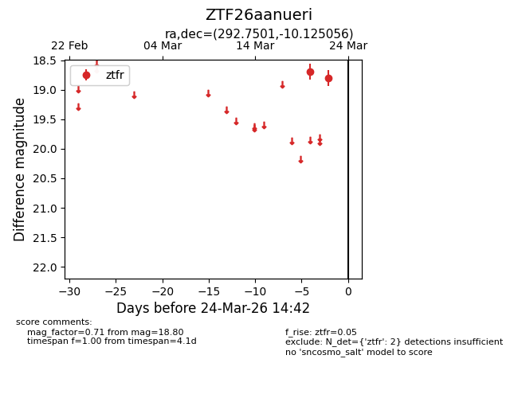
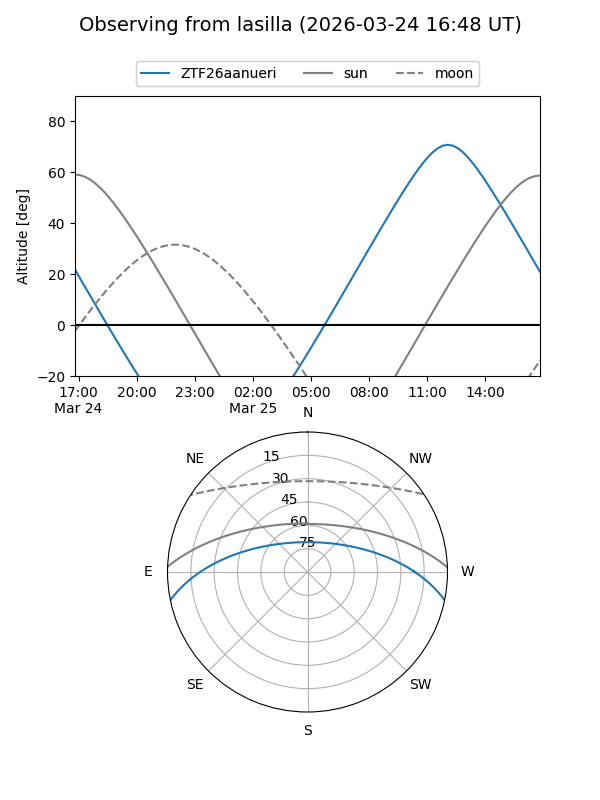
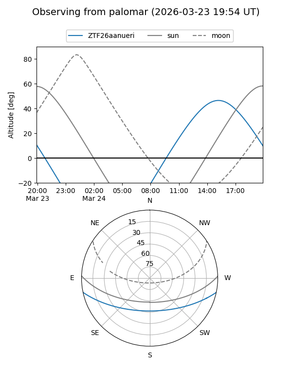

ZTF26aanueri
Target ZTF26aanueri at 2026-03-24 14:45
Aliases and brokers:
FINK: link
Lasair: link
ALeRCE: link
alt names
ZTF26aanueri (ztf,fink_ztf)
Coordinates:
equatorial (ra, dec) = 292.7501,-10.12506
equatorial (HMS+DMS) = 19:31:00.01,-10:07:30.20
galactic (l, b) = (28.2541,-13.33538)
Flags:
Photometry:
last ztfr=18.80
2 ztfr detections
Lightcurve

Visibility


Additional plots